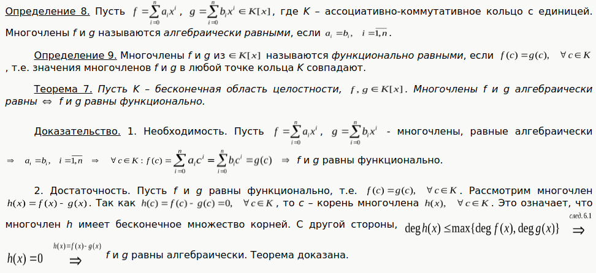

Алгебра. Подготвка к экзамену.
Table of Contents
- 1. DONE 1
- 2. DONE 2
- 3. DONE 3
- 4. Алгоритм Евклида. Линейная форма наибольшего общего делителя многочленов.
- 5. Взаимно простые многочлены и их свойства. Наименьшее общее кратное многочленов.
- 6. Неприводимые многочлены над полем. Теорема о факторизации.
- 7. Многочлены над C и R. Основная теорема алгебры многочленов и её следствия. Многочлены над Q. Критерий Эйзенштейна неприводимости многочлена над Q.
- 8. Векторное пространство над полем скаляров. Подпространство, характеристический признак подпространства.
- 9. Линейная зависимость векторов. Базис и ранг конечной системы векторов.
- 10. Базис векторного пространства. Конечномерные векторные пространства.
- 11. Координаты вектора в базисе. Матрица перехода от одного базиса к другому. Связь между координатами вектора в разных базисах.
- 12. Линейная оболочка системы векторов. Суммы подпространств.
- 13. Скалярное произведение в вещественном векторном пространстве. Ортогональные векторы. Линейная независимость ортогональной системы ненулевых векторов.
- 14. Евклидово пространство. Матрица Грама скалярного произведения в базисе и её изменение при переходе к другому базису.
- 15. Ортогональные и ортонормированные базисы в евклидовом пространстве. Процесс ортогонализации Грамма—Шмидта.
- 16. Длина вектора, угол между векторами, угол между вектором и подпространством, объём параллелепипеда в евклидовом пространстве.
- 17. Линейный оператор в векторном пространстве. Матрица линейного оператора в данном базисе и её изменение при переходе к другому базису.
- 18. Ядро и образ линейного отображения. Невырожденные линейные операторы.
- 19. Собственные значения и собственные векторы линейного оператора. Характеристический многочлен линейного оператора.
- 20. Линейная независимость собственных векторов, принадлежащих попарно различным собственным значениям.
- 21. Диагонализируемые линейные операторы. Теорема о диагонализируемости линейного оператора с простым спектром. Критерий диагонализируемости.
- 22. Квадратичные формы. Приведение квадратичной формы к сумме квадратов с коэффициентами методом Лагранжа.
1 DONE 1
1.1 DONE Кольцо многочленов R[x] над областью целостности R.
Кольцо \(K\) - это множество "чисел", с которыми всегда по обычным правилам выполнимы \(+,-,*\) (Деление может быть выпонимо не всегда)
Многочлены над кольцами вычетов

1.2 DONE Теорема безу.
1.3 DONE Теорема о числе корней многочлена.
Теорема о числе корней многочленов
1.4 DONE Формулы Виета.
Формулы Виета — формулы, связывающие коэффициенты многочлена и его корни.
2 DONE 2
2.1 DONE Алгебраическое и функциональное равенство многочленов.

2.2 DONE Интерполяционная формула Лагранжа.
3 DONE 3
3.1 DONE Кольцо многочленов F[x] над полем F.
Теорема: Любое поле, а также любое кольцо с единицей, содержащееся в некотором поле, является областью целостности.
Обратно, любая область целостности может быть вложена в некоторое поле. Такое вложение дает конструкция поля частных.
3.2 DONE Деление с остатком.
3.3 DONE Наибольший общий делитель многочленов.